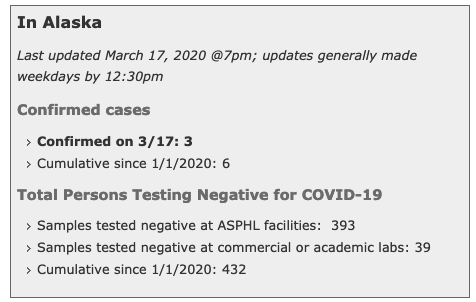
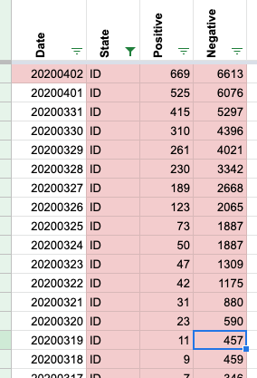

#1129: [MI] Remove negative (people or cases)
Issue number 1129
karaschechtman opened this issue on March 4, 2021, 5:21 PM PST
Labels Data quality
State or US: MI
Describe the problem Right now, MI's negative people field has negative tests. Because we do not rely on these anymore for totalTestResults, we can delete them. The full timeseries will remain available in the negative PCR tests field.
Link to data source N/A deleting
Comments
#1129: [MI] Remove negative (people or cases)
Issue number 1129
karaschechtman opened this issue on March 4, 2021, 5:21 PM PST
Labels Data quality
State or US: MI
Describe the problem Right now, MI's negative people field has negative tests. Because we do not rely on these anymore for totalTestResults, we can delete them. The full timeseries will remain available in the negative PCR tests field.
Link to data source N/A deleting
Comments
#1128: [MI] Patching 03/10/20 - 03/16/20 due to copy paste error
Issue number 1128
whobody opened this issue on March 4, 2021, 4:16 PM PST
Labels Data quality
State or US: [State name, or "US" if this is an issue with country-wide data]
Describe the problem When we copy pasted for #487 we missed 03/10/20 to 03/16/20.
Link to data source https://docs.google.com/spreadsheets/d/1n0dOR8Dxjtg_usQdgbYe4LuDPURi_HK6WFL3wvawRn0/edit#gid=500776026
Comments
#1128: [MI] Patching 03/10/20 - 03/16/20 due to copy paste error
Issue number 1128
whobody opened this issue on March 4, 2021, 4:16 PM PST
Labels Data quality
State or US: [State name, or "US" if this is an issue with country-wide data]
Describe the problem When we copy pasted for #487 we missed 03/10/20 to 03/16/20.
Link to data source https://docs.google.com/spreadsheets/d/1n0dOR8Dxjtg_usQdgbYe4LuDPURi_HK6WFL3wvawRn0/edit#gid=500776026
Comments
#915: [MI] Patch 10/27 Timestamp
Issue number 915
hmhoffman opened this issue on October 29, 2020, 6:38 AM PDT
Labels Data quality
State: MI
Dates affected: 10/27
Describe the issue: On 10/27 the timestamp for MI was not updated, however the data was. We should patch the 10/27 timestamp.
Comments
BEFORE:
AFTER:

#902: [MI] Revert 10/17 numbers to dash numbers
Issue number 902
muamichali opened this issue on October 18, 2020, 3:44 PM PDT
Labels Data quality stale
State or US: Michigan
Describe the problem On 10/17 the MI dash updated late and we used numbers from data downloads. These numbers were higher than the updated dash numbers. In order for these to make sense, we backfilled 10/17 numbers from the dash.
Link to data source https://covidtracking.com/screenshots/MI/MI-20201017-122050.png
Comments
This issue has been automatically marked as stale because it has not had recent activity. It will be closed if no further activity occurs. Thank you for your contributions!
This issue has been closed because it was stale for 15 days, and there was no further activity on it for 10 days. You can feel free to re-open it if the issue is important, and label it as "not stale."
#843: [MI]Back-fill probable cases based on totals & confirmed from 6/12-7/27
Issue number 843
muamichali opened this issue on September 17, 2020, 9:30 AM PDT
Labels Data quality
State or US: Michigan
Describe the problem CTP did not capture explicit probable cases before 7/28. We can backfill the number of probable cases from 6/12 - 7/28 by subtracting confirmed cases from total.
Link to data source Provide links to original data sources that we can refer to, like a state COVID website.
Comments
Done in #701, closing issue.
#784: [MI] Filling in late update from 8/20
Issue number 784
the-daniel-lin opened this issue on August 21, 2020, 9:13 AM PDT
Labels Historical Data Missing Data
State or US: Michigan
Describe the problem MI's update came after our scheduled publication shift. Filling in the 8/20 values.
Link to data source State website/dashboard
Comments
BEFORE:
AFTER:
#701: [MI] Historical Positive Cases (PCR) are sometimes higher than lumped cases, need to be corrected
Issue number 701
karaschechtman opened this issue on July 30, 2020, 6:54 AM PDT
Labels Backfill Data quality not stale
State or US: MI
Describe the problem Before 4/12, the value for Positive Cases (PCR) are sometimes higher than the value for the Positives column (it appears for every day except 4/10-4/11). E.g., on 3/17 we record 4491 confirmed cases, but only 3659 lumped. This appears to be the result of a backfill on 6/11. We should fill in these values from the most recent backfill data provided by MI, making sure that Positive Cases (PCR) are allotted to the right date
Link to data source usual MI spot
Action Plan
- [x] Backfill
Probable Casesfrom 6/12 - 7/27 from total-confirmed - [x]
Positive Cases PCR- timeseries corrections
- on june 9th , 59278 was duplicated on 6/9 by mistake
- on march 17th, a number was missed
- [x]
Positive Cases (confirmed+probable)time series
the number from 3/1-3/16 were not updated by 6/11 backfill by mistake - [x] Backfill
Probable Casesfrom 3/1-6/11 using the numbers from the file MI gave us on 6/11 (we didn't have the column yet then so we couldn't stash that anywhere)
Comments
Previous Backfill GH issue https://github.com/COVID19Tracking/issues/issues/487
Before and After values are in the attached sheet. Probable-Confirmed-Total Cases Timeseries Backfill MI.xlsx
#644: [MI] Hosp and ICU discrepancy on 6/21
Issue number 644
brianskli opened this issue on July 17, 2020, 5:37 PM PDT
Labels Historical Data
Hosp and ICU are typically sourced from the patient census table, but it appears as though these values were sourced from elsewhere on 6/21, interrupting the time-series.
Comments
Upon reviewing screenshots, numbers from the patient census were used: https://covid-tracking-project-data.s3.us-east-1.amazonaws.com/state_screenshots/MI/MI-secondary-20200621-183853.png After: Before:
A second look was taken at 6/15-/30. Fixed using screenshots of the patient census table.
Other issues found: Inaccurate vents on 6/21 (298 -> 209)
Before:
 After:
After:
#487: [MI Historicals] State added probable cases and deaths. Historic time series needs to be updated
Issue number 487
muamichali opened this issue on June 11, 2020, 1:39 PM PDT
Labels Data quality
XLS provided via MI DHHS MI Special Request Testing, Confirmed and Probable Cases By Date.xlsx
Comments
We updated the data based on XL provided by Michigan's DHHS See before and after snapshots here https://docs.google.com/spreadsheets/d/1n0dOR8Dxjtg_usQdgbYe4LuDPURi_HK6WFL3wvawRn0/edit#gid=500776026
#456: [MI historicals] MI hospitalization numbers weren't updated in a few days
Issue number 456
muamichali opened this issue on May 26, 2020, 6:53 PM PDT

Comments
Hi @muamichali, thanks for opening the issue. After reviewing our screenshots of Michigan's COVID-19 site, I'm confirming Michigan reported the # of Inpatients as 953 on 5/24, 5/25 and 5/26.
In addition, on 5/26, Michigan also updated the # of Inpatients from 953 to 882 after we published. We publish the daily stats every afternoon. If a state updates the number of tests or cases after that time, we catch that update on the following day.
Thank you, Camille
#451: [MI historicals] negative tests for 5/23 because separation of antibody & PCR tests by state
Issue number 451
muamichali opened this issue on May 24, 2020, 10:45 AM PDT
Labels stale
Data is here MI-Historicals.txt Source: MI Lab Tests page

Comments
This issue has been automatically marked as stale because it has not had recent activity. It will be closed if no further activity occurs. Thank you for your contributions!
This issue has been closed because it was stale for 15 days, and there was no further activity on it for 10 days. You can feel free to re-open it if the issue is important, and label it as "not stale."
This issue has been automatically marked as stale because it has not had recent activity. It will be closed if no further activity occurs. Thank you for your contributions!
This issue has been closed because it was stale for 15 days, and there was no further activity on it for 10 days. You can feel free to re-open it if the issue is important, and label it as "not stale."
#443: [Historical MI] Entry mistake on deaths.
Issue number 443
qpmnguyen opened this issue on May 22, 2020, 12:17 PM PDT
There was a typo for data entry for deaths at MI on 5/21. Screenshot attached
Should be 5129 intead of 5219

Comments
Fixing it now: Before After:
#310: Updating negative tests historicals for MI (4/26)
Issue number 310
qpmnguyen opened this issue on April 27, 2020, 7:44 AM PDT
There was a data entry mistake on 4/26 publish shift. The number of reported negatives should be 113,228 instead of 156,101 (which was the reported TOTAL tests).
Comments
Updated, Quang!
Before
After
Thank you! This looks good.
#202: MI: Positive Cases does not match screenshots
Issue number 202
J6Szczecin opened this issue on April 16, 2020, 1:28 PM PDT
Labels stale
Prior to April 9th, the historical data does not match that in the screen captures.
Comments
This issue has been automatically marked as stale because it has not had recent activity. It will be closed if no further activity occurs. Thank you for your contributions!
This issue has been closed because it was stale for 15 days, and there was no further activity on it for 10 days. You can feel free to re-open it if the issue is important, and label it as "not stale."
#97: MI: Latent data updates
Issue number 97
saewoonam opened this issue on March 31, 2020, 6:28 PM PDT
Labels Data source
The values for Saturday March 28th are not correct. They are just the daily figures from the previous day.
Comments
This issue has been automatically marked as stale because it has not had recent activity. It will be closed if no further activity occurs. Thank you for your contributions!
Hi @saewoonam, Thanks for bringing this to our attention. We've since backfilled the MI data for 3/28 so this issue is no longer relevant. However, this lag was likely due to the data for MI updating after our publication cutoff. We publish the daily stats every afternoon. If a state updates the number of tests or cases after that time, we catch that update on the following day.
#80: MI: Screenshots Wrong
Issue number 80
zachlankton opened this issue on March 29, 2020, 3:34 PM PDT
Labels Data source stale
Michigan screen shots and link to best data source are out of date.
Comments
Potential duplicate of #79
This issue has been automatically marked as stale because it has not had recent activity. It will be closed if no further activity occurs. Thank you for your contributions!
Please reference issue #173 for a more comprehensive response.
#79: MI: screenshots not correct
Issue number 79
maxerickson opened this issue on March 29, 2020, 3:39 PM PDT
Labels Data source
3/29 and 3/28 are not current data. I guess they changed their format yet again...
Using total - new from 3/29, the new for 3/28 are 993 cases and 19 deaths.
The totals for 3/28 are then 4650 cases and 111 deaths.
Comments
Potential duplicate of #80
Hello,
We did update Michigan data after the state updated its reporting process. Please find more detailed information at #173
#60: MI: Data quality grade update
Issue number 60
rmontroy opened this issue on March 26, 2020, 11:42 AM PDT
Labels State Data Quality
MDHHS is reporting negative test numbers again as of today.
Comments
Hi, @rmontroy, I'm reassigning this to the general issues queue so that the data team sees it.
Michigan is not being updated according to the covid19tracking web page because it is reporting specimens rather than people tested. I urge you to report the specimen counts (with caveats) for the following reasons:
- Other states are very likely double-counting people who have been tested multiple times.
- Michigans confirmed case count is close to the reported positive count, suggesting they are not systematically taking multiple specimens (e.g. nose and mouth) per person.
- Ramp up in total test capacity is important to track in its own right.
This seems to have been resolved. See the Michigan page on the site.
- The data grade is now a B, accounting for reporting negatives.
- The data is noted to be reporting "total specimens"
#41: AK, DC, ID, MI, NY, NV have non-cumulative results
Issue number 41
nickblink opened this issue on March 23, 2020, 4:43 AM PDT
Labels Data quality stale
For DC and NV, there is a day when positive tests decrease from the previous day. For the other four states, there are days when negative tests decrease.
Thanks for putting this together!
Comments
Uploading a spreadsheet of all decreases (more than documented previously), current as of today: covidtracking_problemdates.xlsx
States affected: AK, AL, AZ, CO, DC, DE, FL, HI, IA, KS, MA, MD, MI, NJ, NM, NV, NY, OH, OK, PR, RI, SC, WI
This is my R code to calculate new cases and pull records that decreased from the prior day (any variable) AND the prior day's row for comparison:
library(tidyverse)
covidtracking %>%
arrange(state, date) %>%
group_by(state) %>%
mutate_at(vars(c("positive", "death", "total")),
list(new = ~ coalesce(. - lag(.), .))) %>%
filter_at(vars(ends_with("new")), any_vars(. < 0 | lead(.) < 0)) %>%
ungroup()
I wonder if the problem is an error in the data source in which corrections for prior day results are included as adjustments on the day the error was discovered. This is common in the banking world because of the value of keeping past transactions immutable. It's poor practice for scientific data, however, because the test counts on a given day matter.
If the problem is deferred adjustment, the idea solution is to inform the data sources and ask for better quality data. Short of that, an corrective approach is to reverse the error to the best extent that the data allows: Where a daily result is negative, set that day to zero, and decrease the count of the previous day by the corresponding amount.
Such a correction would not be perfect since (a) you don't know for sure whether the error was from the previous day versus earlier and (b) it doesn't correct any of the cases where adjustments didn't cause negative result. Still, it leads to better data quality than making no correction and avoids the confusion of negative daily counts.
Hello, and thank you for helping us clean our data. Please see the following:
New York:
- [ ] 3/7 to 3/8 the total changed due to pending tests no longer being reported.
- [ ] 3/10 to 3/11 should be correct

Oklahoma
- [ ] 3/20 to 3/21 the variance in totals is tied to the unreliable Pending category. It may be that the data point was phased out and our data was affected by this transition;
Ohio
- [ ] 3/16 to 3/17 variation in data is due to Pending data no longer being published.

New Jersey
- [ ] 3/16 is infact incorrect:

- [ ] corrected

Hawaii
- [ ] Pending for 3/19 decrease per the state

Michigan stopped reporting pending data as of 3/17
Kansas stopped reporting pending data as of 3/11

Iowa stopped reporting pending data as of 3/14
Deleware stopped reporting pending data as of 3/17
DC has fluctuating pending data

Thank you for these clarifications, @careeningspace, and for working on providing these data so accessibly! In terms of cleaning up these records for use:
- Has the NJ correction been applied to the live data?
- Given the inconsistencies with pending data, do you foresee any problems with subtracting pending cases from the totals?
The NJ correction should be in the live feed. Going forward, our API will no longer be focusing on including Pending in our "Total". You can find more detail on our API Page
- [ ] totalTestResults - Calculated value (positive + negative) of total test results.
- [ ] total - DEPRECATED Will be removed in the future. (positive + negative + pending). Pending has been an unstable value and should not count in any totals.
As for subtracting historical "Pending" data - if you want a clean Total, you can sum Positive and Negative.
Great, thanks. That fixes problems in many states and leaves only AK, DC, HI, ID, KY, MI, NV, and SC with negative "increases": covidtracking_problemdates.xlsx
covidtracking %>% arrange(state, date) %>% group_by(state) %>% filter_at(vars(ends_with("Increase")), any_vars(. < 0 | lead(.) < 0)) %>% ungroup()
-[ ] Alaska has a period of data flux that needs more research 3/17 - 3/19:
Data Log:

Daily Report:

State Data from 3/17 14:09 ET:

State Data from 3/17 18:00 ET: 
State Data from 3/18:

Updated Daily after correction:

District of Columbia 3/10 - 3/11
- [ ] We do not have screen grabs from this time period
- [ ] It looks like DC changed how they were reporting data. I am going to make both days match
DC Before update:

DC after update:

-
[ ] ID has an issue with a change in data from 3/18 to 3/19 
-
[ ] Screen cap of State Data from 3/18 14:04:

-
[ ] Screencap of State Data from 3/19 14:04:

-
[ ] The positives increase, while the total tests reported did not. Our methodology is to leave the negatives unchanged in this case. Fixed data below:

This issue has been automatically marked as stale because it has not had recent activity. It will be closed if no further activity occurs. Thank you for your contributions!
This issue has been closed because it was stale for 15 days, and there was no further activity on it for 10 days. You can feel free to re-open it if the issue is important, and label it as "not stale."
#37: MI: save screenshots for top-level page
Issue number 37
timeFractal opened this issue on March 21, 2020, 10:21 PM PDT
Labels Data Tech stale
Hi, presently I'm only seeing screenshots for dashboard. I explained the difference btw the two in the last comment in #29. since site updates only post at 2p, I would say the 5a screenshot is not needed. Also, on a few occasions, the website doesn't update till after 2p (but 6p and 11p should be sufficiently time-buffered for update latency).
why this matters: I have noticed a day where the daily reported new cases (top page) is greater than the difference btw dashboard from day before and day of. each table respectively does add up correctly. I have reached out to state officials for further clarification to account for either lack or abundance of cases.
I would like top-level page cached for future usage in case mistakes like this occur again in the future.
note: both pages Are updated at the same time. this would be a correction for your footnote for MI.
Comments
I'm trying to understand the issue.
Julia archives specific states. Here is MI: http://covid-data-archive.s3-website.us-east-2.amazonaws.com/state_screenshots/MI.
Did you want an additional page capture for MI (which we can do)? Or an alternative time for everything (which we can do)? Or are you looking at a completely different set of pages (so it is not a task for us)?
I'm trying to understand the issue.
Julia archives specific states. Here is MI: http://covid-data-archive.s3-website.us-east-2.amazonaws.com/state_screenshots/MI.
Did you want an additional page capture for MI (which we can do)? Or an alternative time for everything (which we can do)? Or are you looking at a completely different set of pages (so it is not a task for us)?
I am asking screenshots for
https://www.michigan.gov/coronavirus (not saved)
to be taken in addition to
https://www.michigan.gov/coronavirus/0,9753,7-406-98163-520743--,00.html (saved)
the mentioning of time is if it would make you guys' lives easier, the 5am capture isn't needed bc MI only updates once / day.
and also to update the footnote regarding the two sites being out of date, they aren't. I believe that's a misunderstanding. I explained why the two pages differ in #29 .
This issue has been automatically marked as stale because it has not had recent activity. It will be closed if no further activity occurs. Thank you for your contributions!
We are currently capturing two URLs for MI
https://www.michigan.gov/coronavirus/0,9753,7-406-98163_98173---,00.html and https://www.michigan.gov/coronavirus/0,9753,7-406-98159-523641--,00.html
You can see them at http://covid-tracking-project-data.s3-website.us-east-1.amazonaws.com/state_screenshots/MI/
I hope this is sufficient to close this issue
Changes (10).txt